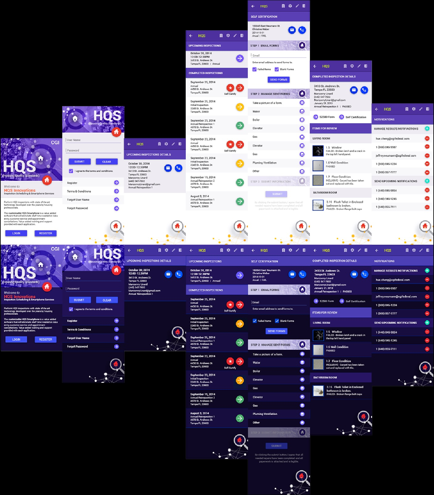
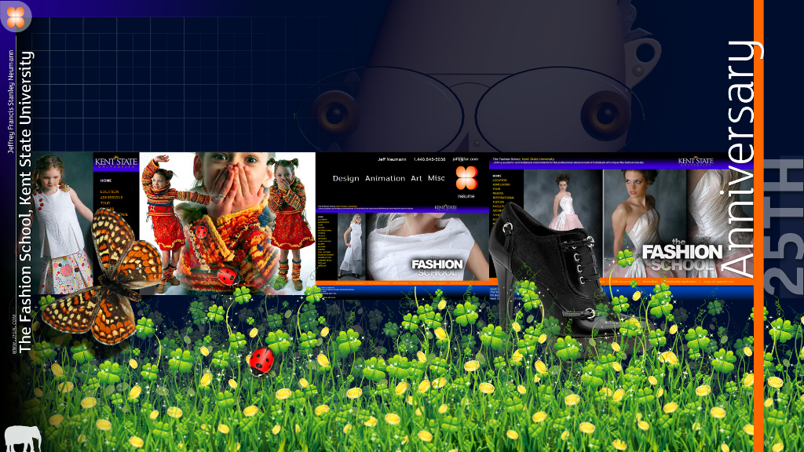

⭐ Milestone
📚 Origins • Volume 1
1975
The Journey Begins

Jeff Neumann embarks on a creative journey spanning art, design, and innovation. Early experiments with reflective CD media.
First experiments with reflective CD media—where digital nostalgia meets industrial decay. The iridescent surfaces caught light like technological ghosts, and I knew this series would haunt viewers with its blend of the obsolete and the eternal.
Traditional Art
Foundation
CD Media
📚 Foundation Years • Volume 1
1985
Digital Awakening

Embracing emerging digital tools, pioneering new techniques in computer-aided design and early digital art.
Digital Art
Innovation
📚 Foundation Years • Volume 1
1995
UX/UI Design Renaissance

Transitioning into UX/UI design, shaping user experiences for enterprise platforms.
UX Design
Enterprise
⭐ Milestone
📚 Mid-Career Experiments • Volume 2
2005
Guernica Series & Mixed Media

The iconic Guernica reimagined series begins, blending historical tragedy with contemporary commentary.
Core Guernica series begins—monochrome restraint became my language for war narratives. Picasso showed me how black and white could scream louder than color. Each fragment here refuses to assemble into comfort.
Guernica
Mixed Media
War Narratives
Black & White
📚 Mid-Career Experiments • Volume 2
2010
Kent State Fashion & Design Innovation

Exploring fashion design and visual narratives, blending traditional techniques with contemporary innovation.
Fashion
Design
Innovation
📚 Technical Mastery • Volume 3
2015
AI-Powered Design Solutions
Pioneering AI integration in design workflows, creating intelligent design systems.
AI
Healthcare
Innovation
⭐ Milestone
📚 Refined Vision • Volume 5
2020
Mr. Snowmann & Studio Series

Prolific year of experimental art: Mr. Snowmann, Studio works, Torsos & Faces. Over 1,000 pieces created.
The night Mr. Snowmann was born on a London wall at 3 AM, simple and defiant. Repetition as branding, simplicity as rebellion—I wanted something that would melt into the city's memory.
Mr. Snowmann
Studio
Street Art
Experimental
📚 Contemporary Works • Volume 8
2023
Sebastian V3: The Art Journey

Third iteration of Sebastian's website showcasing his evolution from builder to fine art creator.
Sebastian
Family Legacy
Creative Growth
⭐ Milestone
📚 Contemporary Works • Volume 11
2025
1,084 Artworks & Counting

Complete portfolio site launched featuring 1,084 original artworks. The journey continues.
Brand new work—still wet with intent, still dangerous with possibility. Recent pieces carry the weight of everything I've learned and the freedom of nothing left to prove. This is what five decades of practice looks like.
Portfolio
50 Years
Complete Archive
Ongoing